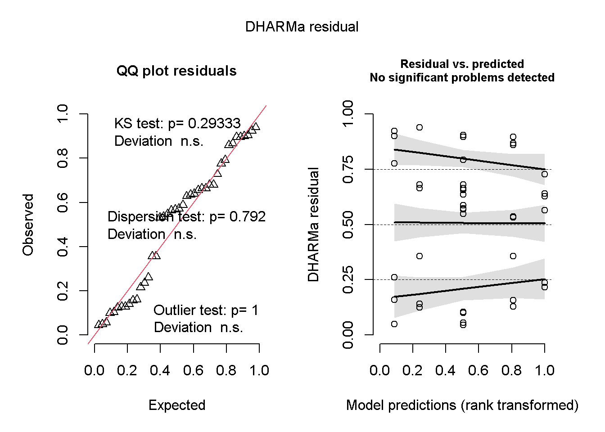
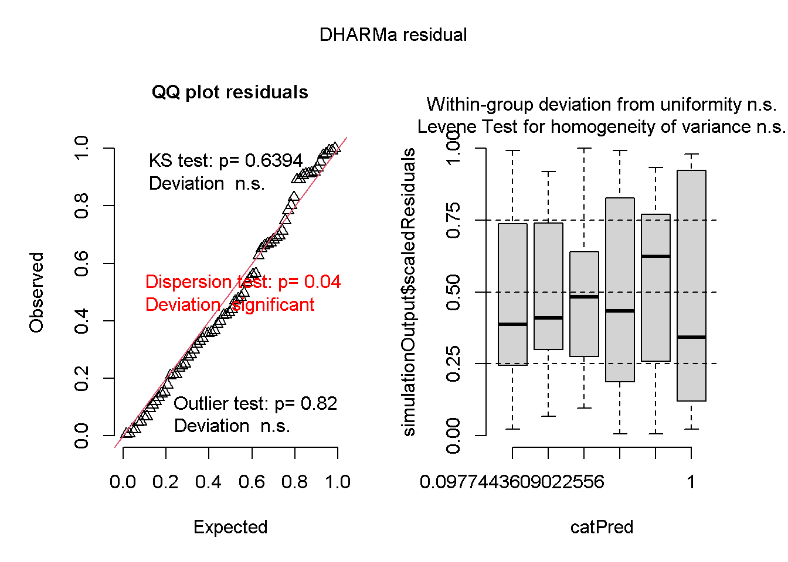
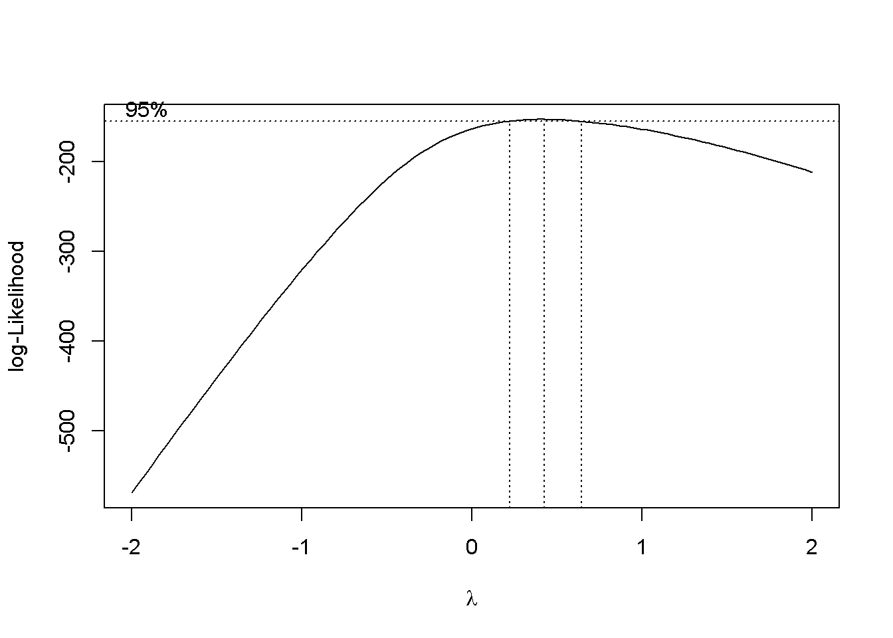
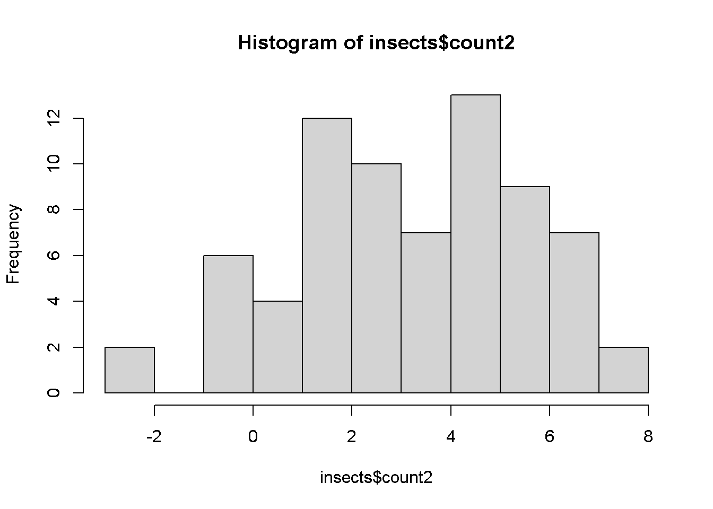

library(agricolae)
library(readxl)
library(tidyverse)
micelial <- read_excel("dados-diversos.xlsx", "micelial")ANOVA 1 Fator
Quando temos mais de 2 tratamentos utilizamos Anova.
definição de P value: é probabilidade de obter o valor encontrado, ou maior que ele, dada hipótese nula.
ESTUDAR :alternativa do teste wilcox e mannwhiltney
Modelo:
aov1 <- aov(tcm~especie, data = micelial)
summary(aov1) Df Sum Sq Mean Sq F value Pr(>F)
especie 4 0.4692 0.11729 1.983 0.117
Residuals 37 2.1885 0.05915 library(performance)
check_heteroscedasticity(aov1)OK: Error variance appears to be homoscedastic (p = 0.175).library(DHARMa)
plot(simulateResiduals(aov1))
insects <- tbl_df(InsectSprays)
dat1 <- insects |>
ggplot(aes(spray, count))+
geom_boxplot()
aov2 <- aov(sqrt(count)~spray, data = insects)
summary(aov2) Df Sum Sq Mean Sq F value Pr(>F)
spray 5 88.44 17.688 44.8 <2e-16 ***
Residuals 66 26.06 0.395
---
Signif. codes: 0 '***' 0.001 '**' 0.01 '*' 0.05 '.' 0.1 ' ' 1check_normality(aov2)OK: residuals appear as normally distributed (p = 0.681).check_heteroscedasticity(aov2)OK: Error variance appears to be homoscedastic (p = 0.854).library(emmeans)
aov2_means <- emmeans(aov2, ~spray,
type = "response")
aov2_means spray response SE df lower.CL upper.CL
A 14.14 1.364 66 11.550 17.00
B 15.03 1.406 66 12.352 17.97
C 1.55 0.452 66 0.779 2.58
D 4.68 0.785 66 3.248 6.38
E 3.27 0.656 66 2.095 4.72
F 16.15 1.458 66 13.370 19.19
Confidence level used: 0.95
Intervals are back-transformed from the sqrt scale pwpm(aov2_means) A B C D E F
A [14.14] 0.9975 <.0001 <.0001 <.0001 0.9145
B -0.116 [15.03] <.0001 <.0001 <.0001 0.9936
C 2.516 2.632 [ 1.55] 0.0081 0.2513 <.0001
D 1.596 1.712 -0.919 [ 4.68] 0.7366 <.0001
E 1.951 2.067 -0.565 0.355 [ 3.27] <.0001
F -0.258 -0.142 -2.774 -1.854 -2.209 [16.15]
Row and column labels: spray
Upper triangle: P values adjust = "tukey"
Diagonal: [Estimates] (response) type = "response"
Lower triangle: Comparisons (estimate) earlier vs. laterlibrary(multcomp)
library(multcompView)
cld(aov2_means) spray response SE df lower.CL upper.CL .group
C 1.55 0.452 66 0.779 2.58 1
E 3.27 0.656 66 2.095 4.72 12
D 4.68 0.785 66 3.248 6.38 2
A 14.14 1.364 66 11.550 17.00 3
B 15.03 1.406 66 12.352 17.97 3
F 16.15 1.458 66 13.370 19.19 3
Confidence level used: 0.95
Intervals are back-transformed from the sqrt scale
Note: contrasts are still on the sqrt scale
P value adjustment: tukey method for comparing a family of 6 estimates
significance level used: alpha = 0.05
NOTE: If two or more means share the same grouping symbol,
then we cannot show them to be different.
But we also did not show them to be the same. Ajustando modelo aplicando SQRT. Podemos também usar log ou (logX + 0.05):
aov2 <- aov(count~spray, data =insects)
summary(aov2) Df Sum Sq Mean Sq F value Pr(>F)
spray 5 2669 533.8 34.7 <2e-16 ***
Residuals 66 1015 15.4
---
Signif. codes: 0 '***' 0.001 '**' 0.01 '*' 0.05 '.' 0.1 ' ' 1check_normality(aov2)Warning: Non-normality of residuals detected (p = 0.022).check_heteroscedasticity(aov2)Warning: Heteroscedasticity (non-constant error variance) detected (p < .001).OPTANDO POR TESTE NÃO PARAMÉTRICO:
kruskal.test(count~spray, data = insects)
Kruskal-Wallis rank sum test
data: count by spray
Kruskal-Wallis chi-squared = 54.691, df = 5, p-value = 1.511e-10install.packages("agricolae")
library(agricolae)
kruskal(insects$count, insects$spray,
console = TRUE)
Study: insects$count ~ insects$spray
Kruskal-Wallis test's
Ties or no Ties
Critical Value: 54.69134
Degrees of freedom: 5
Pvalue Chisq : 1.510845e-10
insects$spray, means of the ranks
insects.count r
A 52.16667 12
B 54.83333 12
C 11.45833 12
D 25.58333 12
E 19.33333 12
F 55.62500 12
Post Hoc Analysis
t-Student: 1.996564
Alpha : 0.05
Minimum Significant Difference: 8.462804
Treatments with the same letter are not significantly different.
insects$count groups
F 55.62500 a
B 54.83333 a
A 52.16667 a
D 25.58333 b
E 19.33333 bc
C 11.45833 cModelo linear generalizado:
glml <- glm(count~spray,
data = insects,
family = poisson(link = "identity"))
plot(simulateResiduals(glml))
summary(glml)
Call:
glm(formula = count ~ spray, family = poisson(link = "identity"),
data = insects)
Coefficients:
Estimate Std. Error z value Pr(>|z|)
(Intercept) 14.5000 1.0992 13.191 < 2e-16 ***
sprayB 0.8333 1.5767 0.529 0.597
sprayC -12.4167 1.1756 -10.562 < 2e-16 ***
sprayD -9.5833 1.2720 -7.534 4.92e-14 ***
sprayE -11.0000 1.2247 -8.981 < 2e-16 ***
sprayF 2.1667 1.6116 1.344 0.179
---
Signif. codes: 0 '***' 0.001 '**' 0.01 '*' 0.05 '.' 0.1 ' ' 1
(Dispersion parameter for poisson family taken to be 1)
Null deviance: 409.041 on 71 degrees of freedom
Residual deviance: 98.329 on 66 degrees of freedom
AIC: 376.59
Number of Fisher Scoring iterations: 3Modelo não-PARAMÉTRICO:
library(tidyverse)
library(MASS)
insects<- InsectSprays
b<- boxcox(lm(insects$count+0.1~1))
lambda <- b$x[which.max(b$y)]
lambda[1] 0.4242424insects$count2 <- (insects$count ^lambda - 1)/lambda
insects$count2 [1] 3.903635 3.024469 6.043993 4.864268 4.864268 4.407118 3.903635
[8] 6.557185 5.484274 6.043993 4.864268 4.640760 4.161975 5.484274
[15] 6.219699 4.161975 5.285168 4.864268 5.484274 5.484274 5.863153
[22] 6.219699 3.024469 4.640760 -2.357143 0.000000 3.024469 0.805831
[29] 1.399509 0.000000 0.805831 0.000000 1.399509 -2.357143 0.000000
[36] 1.887150 1.399509 2.308577 4.407118 2.683787 1.887150 1.399509
[43] 2.308577 2.308577 2.308577 2.308577 0.805831 1.887150 1.399509
[50] 2.308577 1.399509 2.308577 1.399509 2.683787 0.000000 0.000000
[57] 1.399509 0.805831 2.683787 1.887150 4.161975 3.629951 5.078760
[64] 6.390651 5.078760 5.285168 4.640760 3.903635 7.033117 7.033117
[71] 6.719601 4.640760hist(insects$count2)